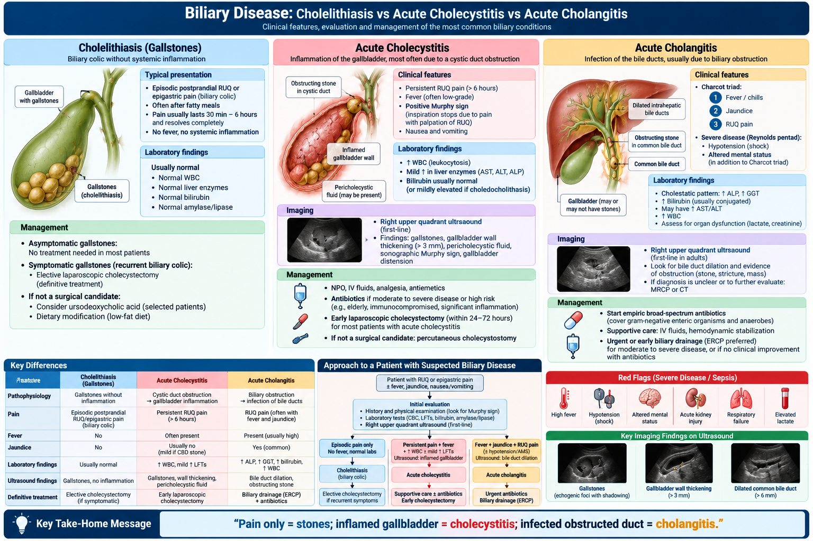
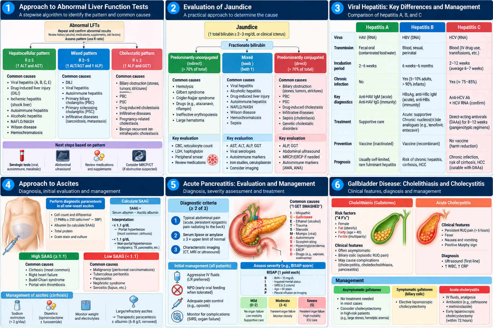
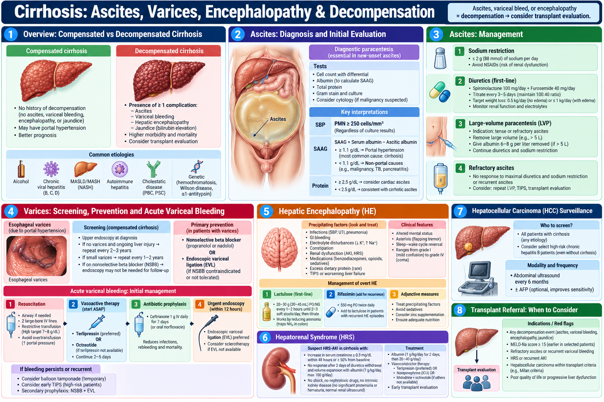
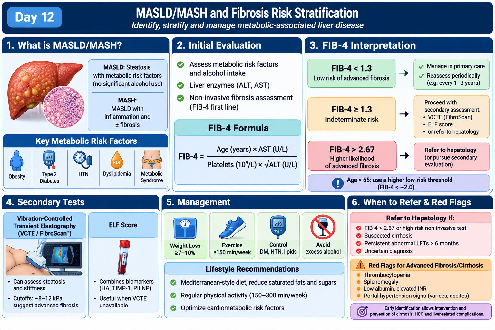
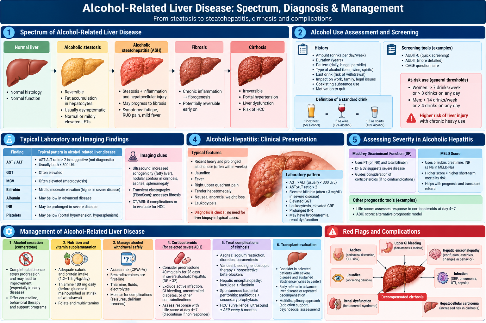
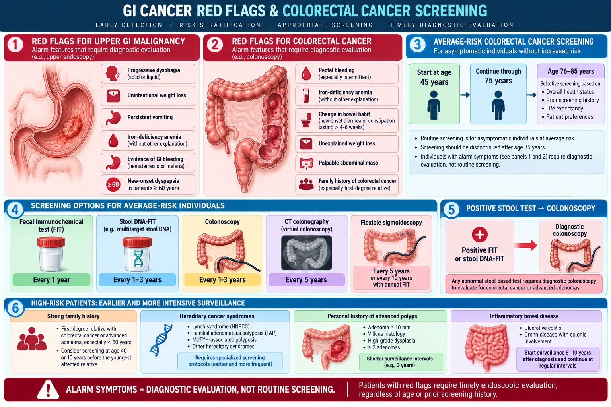

🧫 Liver, Gallbladder, Pancreas & GI Cancer Essentials
High-yield biliary disease, pancreatitis, abnormal LFTs, viral hepatitis, cirrhosis, MASLD, alcohol-related liver disease and colorectal screening for physician-level review.
80 questions
RUQ Pain & Biliary Disease
Differentiate biliary colic, acute cholecystitis and ascending cholangitis quickly and safely.
Key recognition points
- Biliary colic: episodic post-prandial RUQ/epigastric pain from transient cystic duct obstruction, usually without fever or persistent tenderness.
- Acute cholecystitis: persistent RUQ pain, fever, leukocytosis and a positive Murphy sign.
- Ascending cholangitis: infection plus obstruction — think fever + jaundice + RUQ pain (Charcot triad), with hypotension/confusion in severe disease.
Initial management
- Check CBC, CMP/LFTs, bilirubin, lipase and RUQ ultrasound first in most exam vignettes.
- Cholangitis requires urgent IV fluids, broad-spectrum antibiotics and biliary drainage (usually ERCP).
- Acute cholecystitis usually needs analgesia, antibiotics when indicated, supportive care and early surgical evaluation for cholecystectomy.
High-yield exam pearls
- Ultrasound is the preferred initial imaging test for suspected gallbladder disease.
- Common bile duct obstruction often raises bilirubin and alkaline phosphatase disproportionately.
- Gallstone pancreatitis should be suspected when biliary symptoms coexist with lipase elevation.
Red flags / pitfalls
- Do not miss sepsis from cholangitis in a jaundiced febrile patient.
- Do not label persistent RUQ pain with systemic signs as simple biliary colic.
- Acalculous cholecystitis can occur in critically ill patients and may be subtle.
🩺 RUQ Pain & Biliary Disease: Triage and First-Line Management
Click to open/close.
Acute Pancreatitis
Recognize pancreatitis early, assess severity and focus on supportive care first.
Diagnosis
- Diagnosis is made when at least 2 of 3 are present: characteristic pain, lipase/amylase ≥3× ULN, or compatible imaging.
- Typical pain is severe epigastric pain radiating to the back, often with nausea and vomiting.
- Important causes include gallstones, alcohol, hypertriglyceridemia, post-ERCP and medications.
Core management
- The foundation is early IV fluids, analgesia, antiemetics and close reassessment.
- Feed early enterally once tolerated; do not keep patients NPO longer than needed without a reason.
- If there is coexisting cholangitis or persistent biliary obstruction, think about urgent ERCP.
Severity pearls
- Check for organ failure, rising BUN/Cr, hypoxemia and systemic inflammatory response.
- Pancreatic antibiotics are not routine in uncomplicated pancreatitis.
- A very high ALT in the right setting supports gallstone pancreatitis.
Complications / traps
- Hypotension, AKI, respiratory failure or altered mental status indicate severe disease.
- Do not diagnose pancreatitis based on a mild nonspecific enzyme elevation alone.
- Suspected infected necrosis requires escalation, cultures when relevant and multidisciplinary care.
🩺 Pancreas & Liver Core Review
Click to open/close.
Abnormal LFTs & Jaundice Patterns
Use the laboratory pattern to narrow the differential: hepatocellular, cholestatic or isolated bilirubin elevation.
Pattern recognition
- Hepatocellular: AST/ALT predominant elevation.
- Cholestatic: alkaline phosphatase and bilirubin predominant elevation.
- Isolated unconjugated bilirubin suggests overproduction or impaired conjugation (for example Gilbert syndrome or hemolysis).
Systematic evaluation
- Start with history: alcohol, acetaminophen, herbals/supplements, new medications, viral risks and metabolic syndrome.
- Confirm the pattern, repeat if needed, and add INR/albumin if concerned for impaired synthetic function.
- Ultrasound is high yield when cholestasis, biliary obstruction or structural liver disease is suspected.
Useful clues
- AST:ALT >2 suggests alcohol-related injury in the right context.
- Very high aminotransferases can be seen in ischemic, toxic or acute viral hepatitis.
- High INR or encephalopathy is more important than the transaminase number alone.
Red flags / pitfalls
- A jaundiced patient with fever or hypotension may have cholangitis and cannot wait.
- New confusion, coagulopathy or hypoglycemia raises concern for acute liver failure.
- Do not ignore medication history, especially acetaminophen and herbals.
🩺 Liver Function Tests, Jaundice & Hepatitis Patterns
Click to open/close.Viral Hepatitis: High-Yield Approach
Know the screening clues, basic serologies and the big management steps.
Core concepts
- Acute viral hepatitis often presents with malaise, anorexia, jaundice and markedly elevated aminotransferases.
- HBV and HCV risk factors include blood exposure, injection drug use and other transmission routes depending on the virus.
- HAV and HEV are usually fecal-oral; HAV vaccine is preventive and chronic infection does not occur with HAV.
Useful testing principles
- HBsAg indicates current HBV infection; anti-HBs indicates immunity.
- Anti-HCV shows exposure, but HCV RNA confirms active infection.
- Supportive care is typical in uncomplicated acute HAV; chronic HBV/HCV need staging and linkage to antiviral care.
Exam pearls
- Screen high-risk patients for HBV and HCV according to risk/exposure framework.
- Always assess for coinfection risks and vaccination opportunities.
- In liver disease questions, INR, bilirubin and encephalopathy usually matter more than memorizing every isolated enzyme value.
Urgent concerns
- Acute liver failure can complicate viral hepatitis and requires urgent specialist evaluation.
- Pregnancy changes the risk profile for some hepatitis infections and management pathways.
- Do not forget needlestick or exposure follow-up pathways in healthcare-related scenarios.
🩺 Viral Hepatitis & Core Hepatology Review
Click to open/close.Cirrhosis & Portal Hypertension Complications
Identify decompensation early and know the big complications that change outcomes.
Decompensation clues
- Major decompensating events are ascites, variceal hemorrhage, hepatic encephalopathy and jaundice.
- Portal hypertension is the driver of many complications, including varices and ascites.
- Look for sarcopenia, edema, splenomegaly and thrombocytopenia as bedside clues to chronic liver disease.
High-yield management priorities
- Ascites: sodium restriction, diuretics when appropriate, and diagnostic paracentesis for new/worsening ascites.
- Encephalopathy: search for a precipitant and treat with lactulose first-line.
- Suspected variceal bleeding: resuscitate, start vasoactive therapy and antibiotics, and arrange urgent endoscopy.
Prevention & monitoring
- Cirrhosis patients need HCC surveillance and variceal screening according to guidance.
- Spontaneous bacterial peritonitis is a life-threatening infection; perform paracentesis in hospitalized patients with ascites.
- Renal dysfunction in cirrhosis may reflect hepatorenal syndrome after other causes are excluded.
Red flags / pitfalls
- Confusion in cirrhosis is not always “just encephalopathy” — also exclude bleeding, infection and electrolyte problems.
- Do not delay paracentesis in a hospitalized patient with tense/new ascites.
- GI bleeding with cirrhosis is a medical emergency.
🩺 Cirrhosis: Recognize and Manage Major Complications
Click to open/close.
MASLD/MASH & FIB-4 Risk Stratification
Use primary-care-friendly fibrosis assessment to identify who needs more workup.
Who is at risk?
- Think MASLD in patients with obesity, diabetes, dyslipidemia or metabolic syndrome plus steatosis or abnormal liver enzymes.
- Many patients have normal or only mildly elevated aminotransferases.
- The clinical question is not just steatosis — it is whether advanced fibrosis is present.
Primary-care workflow
- Calculate FIB-4 using age, AST, ALT and platelet count.
- Low-risk FIB-4 can often be followed in primary care with metabolic risk-factor treatment.
- Indeterminate/high-risk results should prompt second-line fibrosis assessment or hepatology referral.
Management pearls
- Weight reduction and cardiometabolic risk control are central to treatment.
- Screen and treat diabetes, dyslipidemia and hypertension aggressively.
- Remember alcohol intake assessment even when the syndrome appears metabolic.
Pitfalls
- Do not assume “fatty liver” is benign when platelets are low or imaging suggests portal hypertension.
- Normal ALT does not exclude significant fibrosis.
- Exclude other liver diseases when the pattern or history does not fit MASLD.
🩺 MASLD/MASH: FIB-4 and Fibrosis Triage
Click to open/close.
Alcohol-Related Liver Disease
Recognize the spectrum from steatosis to alcoholic hepatitis and connect it to supportive and addiction care.
Key presentations
- Alcohol-related liver disease ranges from steatosis to steatohepatitis, cirrhosis and acute alcoholic hepatitis.
- Alcoholic hepatitis often presents with jaundice, tender hepatomegaly, fever and systemic illness after heavy use.
- A laboratory clue is AST > ALT, typically with both values under 300–500 U/L in classic exam cases.
Management priorities
- Assess severity, nutrition, alcohol withdrawal risk and concurrent infection.
- Abstinence support, thiamine, nutrition and referral for alcohol use disorder treatment are core steps.
- Severe alcoholic hepatitis may require specialist-directed therapy after infection and GI bleeding are assessed.
Practical pearls
- Do not forget pancreatitis, withdrawal and GI bleeding as common coexisting problems.
- Albumin/INR/bilirubin tell you more about severity than AST/ALT alone.
- Many patients benefit from multidisciplinary care and transplant evaluation when advanced disease is present.
Red flags
- Confusion, sepsis, variceal bleeding or renal failure demand urgent escalation.
- Never anchor on alcohol and miss another cause of jaundice or abdominal pain.
- Withdrawal can complicate hospitalization and must be anticipated early.
🩺 Alcohol-Related Liver Disease: High-Yield Exam Review
Click to open/close.
GI Cancer Clues & Colorectal Cancer Screening
Recognize alarm features and know modern screening basics for average-risk and higher-risk adults.
Screening essentials
- Average-risk colorectal cancer screening now begins at age 45.
- Colonoscopy and stool-based tests are both screening options; abnormal stool tests require colonoscopy.
- Family history, hereditary syndromes or inflammatory bowel disease can require earlier or more intensive screening.
Clinical clues to cancer
- Alarm features include iron deficiency anemia, overt GI bleeding, unintentional weight loss, altered bowel habit and dysphagia depending on location.
- Painless jaundice suggests biliary or pancreatic obstruction until proven otherwise.
- A new bowel-pattern change plus anemia should never be dismissed as “just hemorrhoids.”
High-yield reminders
- Screening is for asymptomatic patients; symptomatic patients need diagnostic evaluation.
- Think colon cancer in older adults with occult bleeding or unexplained iron deficiency anemia.
- Upper GI alarm symptoms often push toward endoscopy rather than empiric therapy alone.
Pitfalls
- Do not let a presumed benign cause delay cancer workup when red flags are present.
- Rectal bleeding is not automatically hemorrhoids.
- Weight loss + jaundice + pruritus should trigger urgent evaluation for obstructive pathology.
🩺 GI Cancer Clues & CRC Screening
Click to open/close.
⚡ Rapid review
Day 12 completion
Mark complete when you finish the notes, practice questions and QBank block.